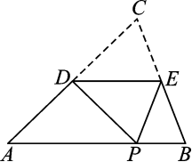

一、 选择题
1. 一个等腰三角形的两边长分别是3和7,则它的周长为 ( )
A. 17 B. 15 C. 13 D. 13或17
2. 在等腰△ABC中,AB=AC,其周长为20 cm,则AB边的取值范围是 ( )
A. 1 cm<AB<4 cm B. 5 cm<AB<10 cm
C. 4 cm<AB<8 cm D. 4 cm<AB<10 cm
3. 如图,已知∠AOB=60°,点P在边OA上,OP=12,点M、N在边OB上,PM=PN,若MN=2,则OM= ( )
A. 3 B. 4 C. 5 D. 6
(第3题)
(第4题)
(第5题)
(第6题)
4. 如图,在△ABC中,AB=AC,点D在AC上,且BD=BC=AD,则∠A等于 ( )
A. 30° B. 40° C. 45° D. 36°
5. 如图,在等腰梯形ABCD中,∠ABC=2∠ACB,BD平分∠ABC,AD∥BC,则图中的等腰三角形有 ( )
A. 1个 B. 2个 C. 3个 D. 4个
6. 如图,在▱ABCD中,已知AD=8 cm,AB=6 cm,DE平分∠ADC交BC边于点E,则BE等于 ( )
A. 2 cm B. 4 cm C. 6 cm D. 8 cm
二、 填空题
7. 如图,在Rt△ABC中,∠B=90°,AC的垂直平分线MN与AB交于点D,∠BCD=10°,则∠A的度数是 .
(第7题)
(第8题)

(第11题)
8. 如图,在△ABC中,AB=AC,∠A=40°,点D在AC上,BD=BC,则∠ABD的度数是 .
9. 用反证法证明命题“三角形中至少有一个角大于或等于60°”时,第一步应假设 .